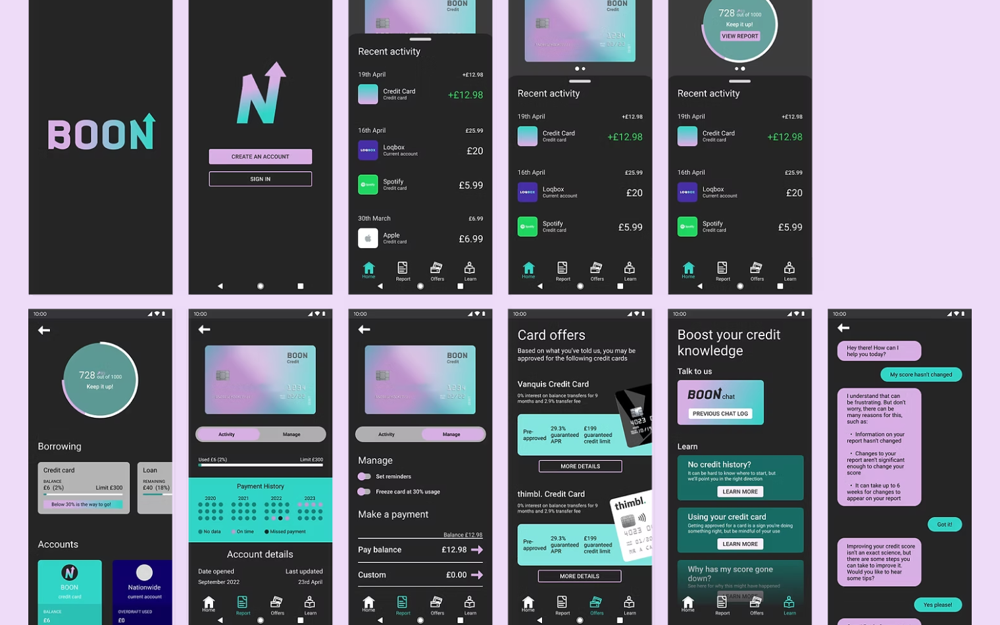
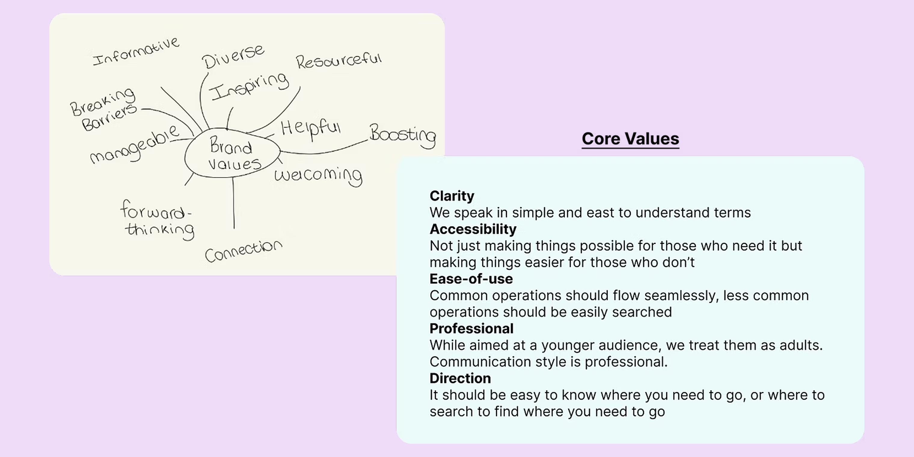
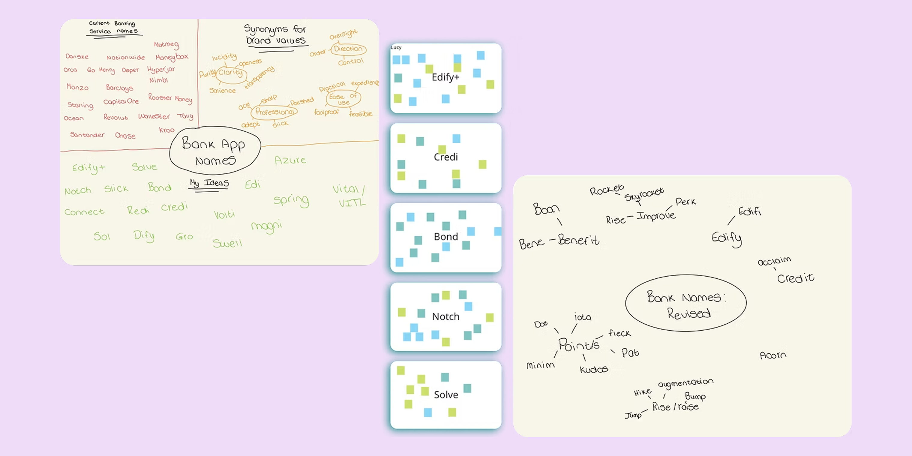
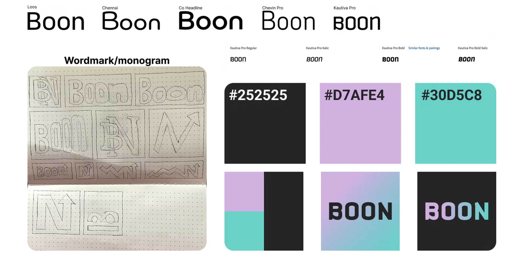
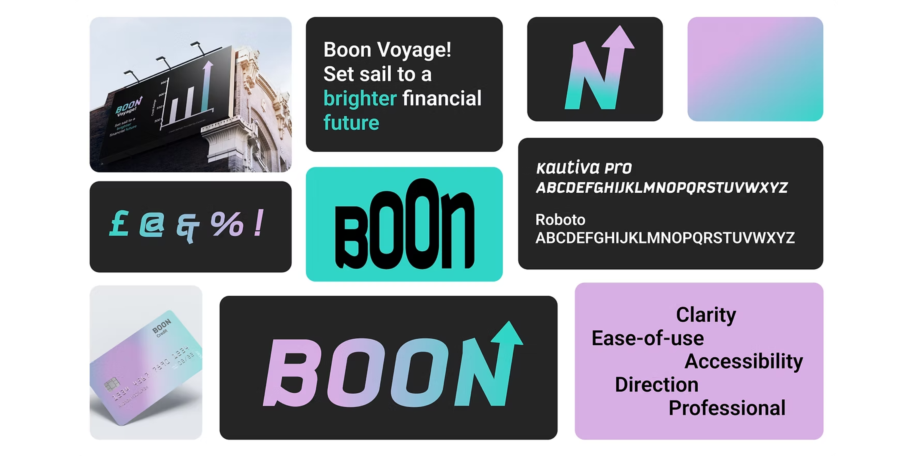
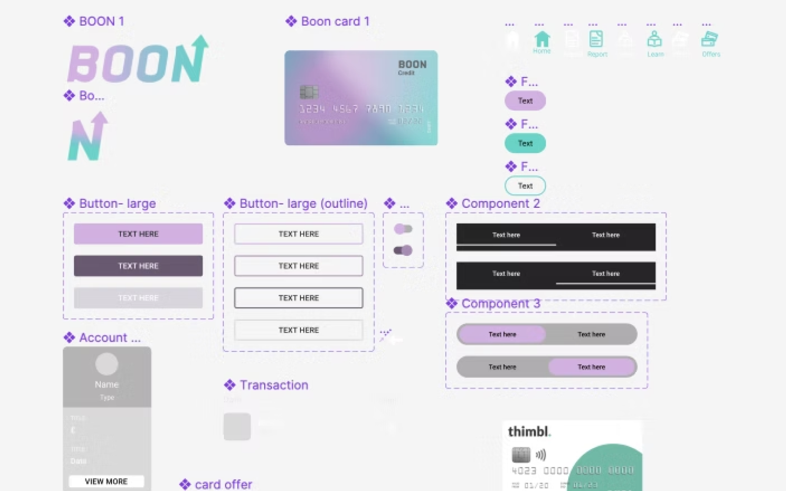

Boon
Overview
During my first year of university I was tasked with creating a banking app that tackled an issue 16-25 year olds currently struggle with. We were given a list of requirements including being able to demonstrate an ability to show a considered approach to developing a brand identity, which would then be presented as a set of brand guidelines and applied to screens. With this spec, I created ‘Boon’, an app to help young people navigate the financial world.

Market Research
Considering the brief was pretty open-ended, I carried out market research to find an area directly affecting the target audience. As a young person myself, I had my own experiences to draw from, but I also searched the UK Personal Finance subreddit on reddit to search for any blindspots I may have had from my experience. I searched for studies and surveys, and among them one in particular that was recent and focussed on Gen Z. It found that, although the financial literacy of the majority of young people is poor, they show a willingness to learn and want to improve their financial health [1]. The study also worryingly noted that “...half of teens (48%) are learning about investing from social media despite [them also] ranking it as one of the least trustworthy sources for investing advice”.
It’s clear that there’s a gap in the market for tools to help with financial literacy for Gen Z. In order to combat this issue, my app will act as a hub: for keeping track of your score, managing credit cards, alert users when they have a new card, and a generative AI text chatbot to ask their questions to.
Branding Process
To begin the branding process, I considered what the core brand values would be. I established these early on and they served as a compass for each of the following stages. I found that they minimised time to make a good decision consistent with the rest of the project. This was especially useful when populating the text within the app, as I felt as though I knew the ‘voice’ of the app from the values.

The next stage was coming up with a brand name. This involved a lot of iteration as I wanted it to encompass the theme and goal of the product, and also to fit in with the core values I had decided on. I began mind-mapping and listing names of current banking apps to try and gather some inspiration. I also noted synonyms of my brand values in hopes that I could find a name that sets the tone of the brand.
I narrowed down a selection of possibilities and presented them to a group of people within the target age range and got them to rank the names from first to third. However, despite there being a favourite, the verbal feedback I got was that nobody found it particularly good and I wasn’t satisfied with it for representing the brand. After revisiting the mind-mapping process I then settled on the name Boon, a synonym of benefit which is ultimately what the app aims to do for young people.

Visual Elements
Typography, colour choices, wordmark and monogram were my next focuses. Of particular focus was the wordmark and monogram, as that would act as the main touchpoint potential customers would come across for the brand. Colour was an important consideration for the brand as it would be used across all interfaces and touchpoints to provide a certain feeling, with lilac intended to be inspiring and turquoise for calmness. In keeping with the core values of clarity and accessibility, I wanted something that contrasted well but wasn’t difficult to look at.

At a later stage in the project, we were to critique each of the other students’ work. I compiled a style tile with my visual elements, strapline, brand values and touchpoints. I found this to be a beneficial task as it allowed me to get real feedback on what was strong and what needed further consideration. This allowed me to choose what to prioritise as we entered the ending stages of the process.

To streamline the design process when creating my high fidelity mockups, I created a comprehensive component set in Figma, as well as setting local styles for colour and typography. Having this groundwork done meant I could ensure consistency throughout the designs.

Final Thoughts
This project gave me a lot of learning opportunities and it allowed me to better understand the intricacies within branding and what all it encompasses. This was also my first experience creating a component set in Figma, as I had previously just created elements and duplicated them throughout my designs, I can now see how it can benefit the design process and interactivity within it. Upon reflecting on the final app designs, I do feel there was room for improvement, despite having tints and shades of my primary colours in the local styles, I feel I used them inconsistently. I also used grey for some buttons and cards which makes some elements look unfinished as the others had a consistent use of the turquoise and lilac brand colours. The features within the app did appropriately demonstrate the purpose of helping young people attain more knowledge around the topic of credit scores though the use of the chat bot and credit card management section.